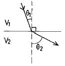

해양자원개발기사 (2004-05-23 기출문제)
1과목: 해양학개론
1. 해수 중 용존기체의 해양-대기간 기체교환에 관계가 가장 적은 것은?
- 기체의 확산계수
- 대기와 표층수의 기체분압차이
- 해수표면막의 두께
- 표층수의 이온강도(ionic strength)
(정답률: 알수없음)

2. 다음 중 표층 해류 생성의 주된 원인이 되는 것은?
- 해양-대기 열수지
- 바람
- 밀도구조
- 지구자전
(정답률: 알수없음)
3. 직경이 62.5㎛이하의 퇴적물을 입도분석하는 방법은 어떤 것이 가장 적절한가?
- Sieve방법
- Pippette방법
- Turbidity방법
- 물리탐사법
(정답률: 알수없음)
4. 일반적인 해수 중의 무기성분 분포 함량을 표시한 것 중 가장 올바른 것은?
- Na+＞Ca2+＞Mg2+, Cl-＞HCO3-＞SO42-
- Na+＞Mg2+＞Ca2+, Cl-＞SO42-＞HCO3-
- Mg2+＞Na+＞Ca2+, Cl-＞SO42-＞HCO3-
- Mg2+＞Ca2+＞Na+, Cl-＞HCO3-＞SO42-
(정답률: 알수없음)
5. 다음 중 방사성 핵종의 붕괴방정식으로 맞는 것은? (단, A는 시간 t경과후 방사능 농도, Ao는 초기의 방사능 농도, λ 는 붕괴상수, t는 시간 이다.)
- A = Ao × (-λ t)
- Ao = A × (-λ t)
- Ao = Ae-λt
- A = Aoe-λt
(정답률: 알수없음)
6. 대양저의 열류량에 대한 일반적인 양상 중 틀린 것은?
- 대서양 중앙해저 산맥에서는 높은 열류량을 나타낸다
- 동태평양 해팽에서는 낮은 열류량을 나타낸다.
- 해구에서는 낮은 열류량을 나타낸다.
- 해저산맥의 측면을 따라 열류량이 작은 지역이 띠를 이룬다.
(정답률: 알수없음)
7. 다음 중 반원양성(Hemi-pelagic) 퇴적환경인 곳은?
- 대양저
- 대륙붕
- 대양대지
- 해구
(정답률: 알수없음)
8. 하와이 동남부에 위치한 망간단괴가 풍부한 C-C Zone은 지질 구조상 다음 중 어느 것에 해당하는가?
- 단열대
- 대양저 산맥
- 해구
- 대륙대
(정답률: 알수없음)
9. 대서양형 대륙주변부의 해저지형으로서 가장 수가 많고 많이 발달한 것은?
- 대륙붕 수로
- 삼각주 전면계곡
- 해저협곡
- 심해저 수로
(정답률: 알수없음)
10. 한반도 주변에 가장 흔한 점토광물은?
- kaolinite
- chlorite
- illite
- smectite
(정답률: 알수없음)
11. 연체동물이나 절족동물(arthropod)에 고농도로 함유되어 있는 원소는?
- 비소
- 철
- 알루미늄
- 칼슘
(정답률: 알수없음)
12. 해수 중의 음파의 전파 속도는?
- 수온이 높을수록 빠르고, 수압이 클수록 빠르다.
- 수온이 높을수록 느리고, 수압이 클수록 빠르다.
- 수온이 높을수록 빠르고, 수압이 클수록 느리다.
- 수온이 높을수록 느리고, 수압이 클수록 느리다.
(정답률: 알수없음)
13. 성층해수(stratified ocean)에서 해류속도가 수심에 따라 감소할 경우 밀도 경계면의 경사는 해면 경사와 비교하여 그 경사방향과 경사크기는?
- 같은 방향으로 같다.
- 같은 방향으로 더 크다.
- 반대 방향으로 같다.
- 반대 방향으로 더 크다.
(정답률: 알수없음)
14. 취송류에서 해면의 유향과 정반대의 유향이 되고 해면 유속의 약 4% 정도의 유속으로 감소되는 심도는?
- 역학심도
- 마찰심도
- 무류면
- 보상심도
(정답률: 알수없음)
15. 수준면(Level Surface)이란?
- 중력포텐샬(potential)이 모든 곳에서 같은 면이다.
- 수온이 모든 곳에서 같은 면이다.
- 염분이 모든 곳에서 같은 면이다.
- 수온 및 염분이 모든 곳에서 같은 면이다.
(정답률: 알수없음)
16. 지구상에 일어나는 조석(潮汐) 중, 다음 어느 경우가 최소 조차를 보이는가?
- 달과 태양의 위치가 지구에 대해 서로 반대방향으로 일직선상에 있을 때
- 달과 태양의 위치가 지구에 대해 직각을 이룰때
- 달과 태양의 위치가 지구에 대해 같은 방향으로 일직선상에 있을 때
- 달과 태양의 위치가 지구에 대해 45° 각도를 이룰 때
(정답률: 알수없음)
17. 대마난류와 무관한 것은?
- 쿠로시오의 한 지류다.
- 한반도 남동해안과 일본서안을 따라 북상한다.
- 수온이 높은 해수를 동해에 유입시킨다.
- 염분도가 낮은 해수를 동해에 유입시킨다.
(정답률: 알수없음)
18. 북반구에 존재하는 동안류와 서안류를 비교 기술한 것 중 사실과 다른것은?
- 동안류는 폭이 넓고 서안류는 폭이 좁다.
- 해류층의 두께가 동안류는 얇고 서안류는 두껍다.
- 동안류는 편서풍대에서 흘러오며, 저온, 저염분이고 서안류는 무역풍대에서 흘러오며 고온, 고염분이다.
- 연안류와의 경계가 모두 분명하다.
(정답률: 알수없음)
19. 지형류(Geostrophic currents)에서 균형을 이루는 힘이 아닌 것은?
- 중력
- 마찰력
- 압력경도력
- 코리올리 힘
(정답률: 알수없음)
20. 해양의 표면염분 분포에 가장 큰 영향을 주는 것은?
- 증발-강수량의 차
- 바람분포
- 수온분포
- 심층해류
(정답률: 알수없음)
2과목: 지질해양학
21. 다음에서 화학적 퇴적암에 속하는 것은?
- 응회암
- 규조토
- 석고
- 셰일
(정답률: 알수없음)
22. 해저산맥(oceanic ridge)의 특징에 대한 묘사 중 옳지 않은 것은?
- 높은 열류량
- 심한 기복
- 지진활동이 적음
- 단층이 많음
(정답률: 알수없음)
23. 다음 사항중 수동적 대륙주변부의 특징이 아닌 것은?
- 대륙붕의 폭이 넓으며, 비교적 두꺼운 퇴적층이 발달한다.
- 대륙사면과 대륙대의 발달이 정규적으로 존재한다.
- 대서양의 대륙주변부가 그 좋은 예이다.
- 해구가 잘 발달한다.
(정답률: 알수없음)
24. 지금까지 알려진 해저확장의 속도가 제일 큰 곳이 많은 대양은?
- 홍해
- 대서양
- 인도양
- 태평양
(정답률: 알수없음)
25. 해빈의 퇴적구조 중 파쇄에 의한 해수의 움직임이 해빈전면으로 상승되었다가 뒤로 빠질 때 제일 멀리 생기는 구조를 무엇이라 하는가?
- 층리
- 연흔(ripple)
- 스워시 마아크(swash mark)
- 해빈공(beach pit)
(정답률: 알수없음)
26. 연안표사량(沿岸票砂量)을 직접 지배하는 요인은?
- 파도의 입사각(入射角)이다.
- 파도의 강약(强弱)이다.
- 연안류(沿岸流)이다.
- 모래(砂)의 량과 크기이다.
(정답률: 알수없음)
27. 다음 퇴적층 중 천해환경에서 형성되는 퇴적층은?
- Limy mud
- Graywacke
- Coral reef
- Turbidite
(정답률: 알수없음)
28. 대륙지각(continental crust)의 일반적인 두께는?
- 10km이하
- 10~20km
- 20~30km
- 35~50km
(정답률: 알수없음)
29. 세립질 퇴적물의 입도분석을 할 때 피펫팅을 하는 시간을 결정하는 변수는?
- 온도
- 압력
- 확산제의 양
- 시료의 총량
(정답률: 알수없음)
30. 다음 실험 중 해저퇴적물의 특성과 기원을 연구하는 것과 가장 관련이 적은 것은?
- 해수의 염분도 측정
- 입도 분석
- 중광물 분석
- 원마도 측정
(정답률: 알수없음)
31. 리아스(Rias) 해안이란?
- 굴곡이 많은 해안선을 가진 해안을 말한다.
- 평평한 해안선을 가진 해안을 말한다.
- 절벽으로된 해안선을 가진 해안을 말한다.
- 넓은 평야를 가진 해안을 말한다.
(정답률: 알수없음)
32. 하와이 처럼 섬에 연결되어 발달한 산호초는?
- 거초
- 보초
- 환초
- 초호
(정답률: 알수없음)
33. 우리나라 서해안에 넓게 발달한 조간대는 과거 언제 이후에 발달한 것인가?
- 과거 만년전 이후
- 과거 이만년전 이후
- 과거 오만년전 이후
- 과거 십만년전 이후
(정답률: 알수없음)
34. 부정합(不整合)의 존재와 관계가 없는 것은?
- 침식면의 부존재
- 상・하층간의 구조상의 불일치
- 상・하층간의 암상, 생물상의 급변
- 기저력암의 발달
(정답률: 알수없음)
35. 태평양의 대륙사면이 다른 대양의 대륙사면과 비교 할 때 독특한 점이 아닌 것은?
- 수직거리가 큰 대륙사면 전부가 태평양에 있다.
- 태평양에는 대륙사면의 경사도가 5° 에서 6°사이의 지역이 현저하게 많다.
- 광범위한 지역에 있어서 대륙사면 경사도의 변화가 적다.
- 다른 대양의 대륙사면에 비하여 가장 높은 빈도의 해저협곡이 존재한다.
(정답률: 알수없음)
36. 해저 퇴적물에 중요한 영향을 미치는 해류로 같은 방향으로 계속부는 바람에 의해 해면 부근의 물이 유동하는 것은?
- 조류
- 보류
- 취송류
- 순환류
(정답률: 알수없음)
37. 인회석, 탄산염등의 생성은 무슨 기원에 해당되는가?
- 수성기원
- 생물기원
- 암석기원
- 화산기원
(정답률: 알수없음)
38. 퇴적물의 입도분류에 사용되는 웬트워어드(Wentworth)의 표준척도에서 모래와 실트(silt)의 경계는?
- 0.1mm
- 0.074mm
- 0.0625mm
- 0.⑤3mm
(정답률: 알수없음)
39. 초기 속성작용(Early diagenesis)에 의해서 형성되는 돌로마이트(Dolomite)가 형성되는 환경은?
- 온도가 낮고 염도가 높은 곳
- 온도가 높고 염도도 높은 곳
- 온도가 높고 염도가 낮은 곳
- 온도가 낮고 염도도 낮은 곳
(정답률: 알수없음)
40. 지진파의 focal mechanism은 판구조론 증거의 하나이다 팽창(dilatational)이 주요 mechanism이 되는 지진은 다음 중 어느 곳에서 가장 활발하게 발생하겠는가?
- 대양저산맥
- 변환단층
- 섭입대(Benioff zone)
- 열점(Hot spot)
(정답률: 알수없음)
3과목: 광물학
41. 심해저 방산충 연니의 주된 성분은?
- 탄산염
- 인산염
- 실리카
- 아라고나이트
(정답률: 알수없음)
42. 이방체 결정에서 빛이 두 방향으로 굴절하는 현상을 무엇이라 하는가?
- 복굴절
- 다색성
- 내부반사
- 전반사
(정답률: 알수없음)
43. 다음 중 퇴적기원의 광상이 아닌 것은?
- 사광상
- 함동세일
- 황광상
- 2차부화광상
(정답률: 알수없음)
44. 퇴적물 시료의 화학적 분리법에서 유기물 제거에 일반적으로 이용되는 시약은?
- 염산
- 질산
- 과산화수소
- 수산화나트륨
(정답률: 알수없음)
45. 다음 중 심해저에서 관찰되기 힘든 광물은?
- 인회석(apatite)
- 토도로카이트(todorokite)
- 일라이트(illite)
- 방해석(calcite)
(정답률: 알수없음)
46. 해양기원의 중정석 광물에 가장 많이 포함되는 주성분 원소는?
- 철
- 스트론 튬
- 크롬
- 망간
(정답률: 알수없음)
47. 두 광물 모두 망간단괴에서 볼 수 있는 망간 광물은?
- 저오콘, 모나자이트
- 필립사이트, 클리높틸로라이트
- 토도로카이트, 버네사이트
- 금, 석석(cassiterite)
(정답률: 알수없음)
48. 토륨을 함유하고 있어 핵연료로 사용될 수 있는 중사광물은?
- 인회석
- 석류석
- 모나자이트
- 저어콘
(정답률: 알수없음)
49. 산과 같은 용액에서 불용성 잔류물로 남지 않는 것은?
- 황철석
- 처트
- 운모
- 방해석
(정답률: 알수없음)
50. 해양저 다금속 유화광상의 성인은?
- 생물작용
- 열수작용
- 풍화작용
- 속성작용
(정답률: 알수없음)
51. 다음 광물 중 벽개가 가장 발달해 있는 것은?
- 녹주석
- 석영
- 장석
- 운모
(정답률: 알수없음)
52. 해저 열수 광상에서 추출 할 수 있는 유용 원소가 아닌 것은?
- 철
- 아연
- 알루미늄
- 구리
(정답률: 알수없음)
53. 다음 중 1:1형 점토 광물은?
- 카오리나이트
- 몬모릴로나이트
- 일라이트
- 스멕타이트
(정답률: 알수없음)
54. X-선 회질분석을 위한 시료준비시 적절한 사항이 아닌 것은?
- 실험의 목적에 따라 특정한 방법으로 시료판을 제작하여야 한다.
- 시료판의 회절각 2θ 각이 30° ~ 90° 정도로 하는 것이 적당하다.
- 시료판의 시료가 모든 시료를 대표할 수 있어야 한다.
- X-선이 통과할 부분이 시판의 시료 전체를 대표할 수 있어야 한다.
(정답률: 알수없음)
55. 해양환경에서 망간단괴의 대략적인 침전속도는?
- 0.01mm~수mm/1,000년
- 0.001mm~0.01mm/1,000년
- 1mm~수mm/1,000년
- 1cm~수cm/1,000년
(정답률: 알수없음)
56. 다음 중 코발트-망간각 (Co-rich manganese Crust)의 주분포 해심은?
- 500 m 이하
- 1,000 ~ 2,000 m
- 2,500 ~ 5,000 m
- 5,000 m 이상
(정답률: 알수없음)
57. 해수를 증발시킬 때 침전되는 순서로 옳은 것은?
- 방해석 → 석고 → 암염 → 칼륨염
- 석고 → 방해석 → 암염 → 칼륨염
- 암염 → 석고 → 방해석 → 칼륨염
- 칼륨염 → 암염 → 석고 → 방해석
(정답률: 알수없음)
58. 다음 중 Quartzite를 바르게 설명한 것은?
- 주로 석영과 장석으로 구성된 변성암이다.
- 일반적으로 석영이 95% 이상으로 구성된 퇴적암이다.
- 일반적으로 석영이 80% 이상으로 구성된 퇴적암이다.
- 사암과 처트가 변성작용을 받아 생성된다.
(정답률: 알수없음)
59. 다음 중 대륙붕과 대륙사면에 주로 분포하는 것은?
- 코발트각
- 유화광상
- 해록석
- 망간각
(정답률: 알수없음)
60. 유기물에 기원하여 퇴적된 해양광물로 볼 수 없는 것은?
- 방해석
- 인회석
- 백운석
- 단백석
(정답률: 알수없음)
4과목: 탐사공학
61. 지자기의 단위 r 를 SI 단위계로 표현하면?
- 1r = 1T
- 1r = 10-3T
- 1r = 10-6T
- 1r = 10-9T
(정답률: 알수없음)
62. 액체에 대한 강성률(rigidity)은?
- 0
- 1
- 2
- 3
(정답률: 알수없음)
63. 탄성파 인공진원 중 육상용으로 주로 쓰이는 것은?
- 스파커
- 에어건
- 바이브로사이스
- 부머
(정답률: 알수없음)
64. 다음 용어중 다중채널 탄성파 자료의 처리와는 관계가 먼 것은?
- 구간속도
- 구조보정
- NMO 보정
- 중합 속도
(정답률: 알수없음)
65. 현재 지표면에서 관찰되는 지열의 주 기원은?
- 고온의 원시지구의 냉각
- 반감기가 긴 방사성 동위원소
- 반감기가 짧은 방사성 동위원소
- 지구조석
(정답률: 알수없음)
66. 지구표면에서의 중력 가속도(gravitational acceleration, g)는 약 얼마인가?
- 980 gal
- 990 gal
- 1,000 gal
- 1,010 gal
(정답률: 알수없음)
67. 지자기의 자료 해석에서 주로 쓰는 방정식은?
- Laplace's equation
- Wave equation
- Diffusion equation
- Maxwell's equation
(정답률: 알수없음)
68. 탄성파(종파)가 해저 지층을 통과할 때 탄성파의 속도를 결정하는 변수가 아닌 것은?
- Density
- Porosity
- Bulk modulus
- Shear modulus
(정답률: 알수없음)
69. 다음 중 전기비저항 검층에 속하는 것은?
- 핵자기공명 검층(nuclear magnetic resonance log)
- 중성자 검층(neutron log)
- 내경 검층(caliper log)
- 노말 검층(normal log)
(정답률: 알수없음)
70. 해성층 탄산칼슘의 생성당시 주변온도를 측정할 때 가장 적당한 안전동위원소의 종류는?
- 유황(S)
- 탄소(C)
- 수소(H)
- 산소(O)
(정답률: 알수없음)
71. 그림과 같은 굴절현상에서 V1 = 1㎞/s, V2 = 2㎞/s θ1 = 30° 라면 θ2는?

- 30°
- 45°
- 60°
- 90°
(정답률: 알수없음)
72. 지표 기복이 없는 평지의 밀도가 2,600 ㎏/m3일 때 1m당 고도보정량은?
- 약 0.4 g.u
- 약 1 g.u
- 약 2 g.u
- 약 3 g.u
(정답률: 알수없음)
73. 굴절법 탄성파 탐사에 사용되는 수신기의 적당한 주파수는?
- 1~10㎐
- 4~15㎐
- 20~50㎐
- 50㎐이상
(정답률: 알수없음)
74. 탄성파 탐사자료 전산처리에서 마이그레이숀(migration) 이란 다음의 무엇을 뜻하는가?
- 속도보정
- 지형보정
- 구조보정
- 정보정
(정답률: 알수없음)
75. 암석에 대한 Less-Back장치나 퇴적물에 대한 Needle probe법에 의하여 측정되는 물리량은?
- 공극율
- 툭율
- 지온구배
- 열전도도
(정답률: 알수없음)
76. 탄성파 반사법의 공심점 중합으로 얻어지는 효과가 아닌 것은?
- 수직해상도의 향상
- 신호대잡음비의 향상
- 다중반사잡음의 억제
- 파형의 향상
(정답률: 알수없음)
77. S파 속도를 Vs, 레일리파 속도를 VR , 러브파 속도를 VL라고 할 때 다음 중 속도순으로 된 것은?
- Vs > VR > VL
- Vs > VL > VR
- VR > Vs > VL
- VR > VL > Vs
(정답률: 알수없음)
78. 암석 노두의 경사와 주향과의 각도는 항상 어떤 각을 이루는가?
- 예각
- 둔각
- 직각
- 평각
(정답률: 알수없음)
79. 다음중 밀도 검층이라고 불리는 것은?
- normal log
- self-potential log
- caliper log
- gamma-ray log
(정답률: 알수없음)
80. 수면에서 발사된 음향에너지가 7500m 깊이의 해저면에서 반사되어 되돌아오는 데는 몇초가 걸리는가?
- 2.5초
- 5초
- 10초
- 20초
(정답률: 알수없음)
5과목: 해양계측학
81. 다음 채니기 중 저서생물 채집에 적당한 것은?
- corer
- dredge
- closing net
- van Dorn sampler
(정답률: 알수없음)
82. 다음 유속계중 유속의 측정범위가 가장 큰 것은?
- Aanderaa RCM4
- Aanderaa RCM5
- EG & G VMCM
- Braystoke DRCM
(정답률: 알수없음)
83. 원격탐사를 위해 가장 먼저 해야할 자료처리 작업은?
- 기하학적 보정
- 레디오메타 변환
- 영상강조
- 결과표시
(정답률: 알수없음)
84. 해양환경에 있어서 유기물 오염의 지표로서 타당하지 않은 것은?
- 용존산소(DO)
- 생물화학적산소요구량(BOD)
- 화학적산소요구량(COD)
- 클로로필 a
(정답률: 알수없음)
85. 조류의 예보 방법에서 해면차를 이용하지 않는 것은?
- 비조화법
- 조화법
- 개정수법
- 분조법
(정답률: 알수없음)
86. 다음 중 조석관측 방법으로 이용되지 않는 것은?
- 부표식
- 압력식
- 표척식
- 지자기식
(정답률: 알수없음)
87. GEK해류계를 이용하는데 알맞지 않은 지구상의 위치는?
- 지자기 적도부근
- 지자기 30° 부근
- 지자기 60° 부근
- 지자기 극 부근
(정답률: 알수없음)
88. 심해저 시추선 glomer challenger호가 시추를 할 때 위치를 유지하도록 하는 dynamic positioning system은 어떤 기구를 이용하는가?
- 소나
- 인공위성
- 로란
- 레이다
(정답률: 알수없음)
89. NOAA-7위성으로 관측된 해표면 수온의 해상도는?
- 0.011Km
- 0.11Km
- 1.1Km
- 11Km
(정답률: 알수없음)
90. 도플러 소나(Doppler sonar)의 주된 용도는?
- 수온측정
- 수심측정
- 항해속도 측정
- 염분측정
(정답률: 알수없음)
91. 다음 중 음파를 이용하여 해저를 조사하는 기기가 아닌 것은?
- Subbottom Profiler
- Air-Gun
- Sono-Buoy
- Piston-Corer
(정답률: 알수없음)
92. 현재 원격탐사에 이용되지 않는 파는?
- 가시광선
- 열적외선
- Micro wave
- X - 선
(정답률: 알수없음)
93. 다음 중 교란이 가장 적은 해저퇴적물 채집 기구는?
- Piston corer
- Vibratory corer
- Rotary drilling corer
- Dredge
(정답률: 알수없음)
94. 방향 탐지기가 아닌 것은?
- Loran
- Decca
- Antenna
- Raydist
(정답률: 알수없음)
95. 해면의 기름에 의한 오염상태 파악에 가장 적합한 것은?
- 적외선 방사계
- 마이크로파 산란계
- 마이크로파 고도계
- 마이크로파 방사계
(정답률: 알수없음)
96. 국제표준 수심을 적절히 나열한 것은?
- 0m, 5m, 10m, 20m, 30m, 50m
- 0m, 10m, 15m, 20m, 30m, 50m
- 0m, 10m, 20m, 35m, 50m, 70m
- 0m, 10m, 20m, 30m, 50m, 75m
(정답률: 알수없음)
97. 해수 중 탄산염의 용해속도가 급격히 증가하는 수심을 무엇이라고 하는가?
- 영구약층
- 용해약층
- 보상심도
- 포화심도
(정답률: 알수없음)
98. 암석(rocks)의 연대측정(age-dating)에 사용되는 방법들을 열거 하였다. 이중 아닌 것은?
- K-Ar Method
- Stable Isotopes
- Magnetostratigraphy
- Varve chronology
(정답률: 알수없음)
99. 다음 중 원하는 수심층에서 플랑크톤을 채집할 수 있는 채집기는?
- 헨센(Hensen)식 플랑크톤 그물
- 클라아크-범퍼식(Clarke-Bumpus) 채집기
- 하아디(Hardy)식 플랑크톤 연속기록기
- Norpac - Net
(정답률: 알수없음)
100. 다음 중 해양의 지질구조를 결정하는 해저탐사 방법이 아닌 것은?
- 탄성파 측정
- 중력측정
- 지자기측정
- 수심측정
(정답률: 알수없음)